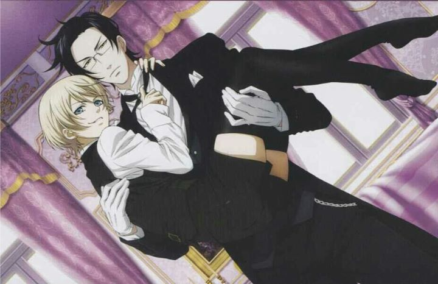

The original first season of "Black Butler" has an original-anime ending, because the manga it was based off was (and as of 2018, still is) ongoing. It actually made for one of the better endings you can find in an anime, and it was assumed no more would be made from the franchise. But the production team likely didn't plan for it becoming as popular as it was (for certain reasons, it satisfies a segment of female audiences in particular that don't have many other options in entertainent), as that ending was rather absolute. When a second season called 'Black Butler II" was announced, fans likely didn't know what to make of it. What could it possibly be about?When the first episode arrived (and I believe as the early production advertising suggested), it seemed the new series would focus on an entirely new pair of characters: the young earl Alois Trancy and his handsome and reliable butler Claude Faustus. This in itself wasn't a bad thing: surely Sebastian of the original series wasn't the only demon in the world, and the two characters differentiated themselves well enough: Alois seemed to have an even darker past that affected his mental state to the point of insanity with the desire to control and humiliate others, and Claude hides nothing in his desire to eventually devour his soul, with a coldness that suggests the two aren't as fond of each other compared to Ciel and Sebastian. Neither character came across as likeable compared to the first series: in fact, they were very much unlikable. But it was a different perspective that could be played well with the characters acting as servants for the Crown in handling the darker crimes of England.And in a completely different turn, the first episode ends with Sebastian himself entering Alois's mansion, stealing a mysterious ring in an old teabox, and putting it on the finger of an unconcious Ciel Phantomhive, stored in a sturdy briefcase like a doll. The opening credits of the first episode gets replaced by the second episode with one that shows the true main characters: Ciel and Sebastian are back, in a surprise bait-and-switch. It was a clever and daring move, and the fans were likely overjoyed to see the old gang back again. But why were they back? It's something of a spolier, but the show slowly reveals that the soul-devouring ceremony went wrong, and Ciel's soul was stolen at the last moment by Claude before Sebastian could take it. Retrieving the ring brought Ciel back, but he had lost his memory of achieiving his vengence against the murderer of his parents, and as such he doesn't know his contract was already fullfilled. So both Sebastian and Claude seek ways to fix the loophole in order to take Ciel for themselves, and Alois presents himself as an adversary to Ciel's personal life, as well as a potential tool in the butler's plans. I appreciate the boldness of the story, but it is clear that the writers were working with producers that said "it was popular, so we want more, we don't care how, you figure it out." The main arc across the 12 episode season feels rushed, despite it being filled with filler stand-alone episdes in the style of the first season's mysteries. More and more, the show stretches the main story on a thread with unbelivable developments, until it reaches a surprise ending that cleverly ties up the story while being impossibly ridiculous. It also changes how one might have perceived the original story, especially with Sebastian, now being defined not as a devoted butler, but simply carrying out orders as per his contract for the sole purpose of eating Ciel's soul. While the story is a bit weak, I will admit this: I had fun. Yes, it is a incredibly decisive season that most fans did not enjoy, but I was glued to the screen until the end. In most examples where the creators take such a sharp turn in the story's direction, it typically comes across with a similar reaction from viewers, either "loving" or "hating" it with little in between. Like the first season, "Black Butler II" has equal doses of horror, mystery, comedy, and eroticism. All these elements seem to be in greater doses than before. The comedy is more silly, and typically more effective because at this point, seeing old characters again is enough to crack a smile. The horror is more gory and disturbing: the first episode shows a servant willingly bend down to have Alois bloodily dig out one of her eyes with his fingers. Both pretty men and pretty women are subject to sexualization, and the overtones of both Claude and Sebastian craving Ciel's soul with a smack of their lips is more than a little suggestive. This time around, it feels a bit too exploitive, making it fit the trend of other nilhistic anime from the mid-2000's ("Gantz" and "Speed Grapher" come to mind, among many others). Even if one enjoyed the first season, this all might turn the same fan off to the style it develops. `Additionally, while the production values are not all too different, it feels like the animation and visuals in general have less of an opportunity to show off. Therefore, the best of season two look like the average of season one, bring the whole thing down as merely acceptable from the anime released that year. Otherwise, the music (some even from the same bands of the first season) is solid, as well as the English voice cast for the (main) characters. I will briefly mention the six OVAs included in Funimation's American release of this season. They were fully dubbed and of proper broadcast length, generally being more humourous or providing greater insight to different characters and lore. These are a a refreshing break after season two, reminding me what most of "Black Butler" is really like, but are purely for entertainment rather than important parts of the overall story.As of 2018. there is a lot of "Black Butler" anime content to enjoy. "Black Butler II" is the black sheep of it all, effectively rewriting the solid ending of the first season and being basically ignored in the third season and related film. But I do appreciate what it tried to be, and whether or not you enjoyed "Black Butler" prior, if you are seeking ambitious and bold anime, this is a fine example, even if it was purely for the money of the franchise's continued success.
- "Ani" More reviews can be found at : https://2danicritic.github.io/ Previous review: review_Black_Butler_-_Book_of_the_Atlantic Next review: review_Black_Lagoon